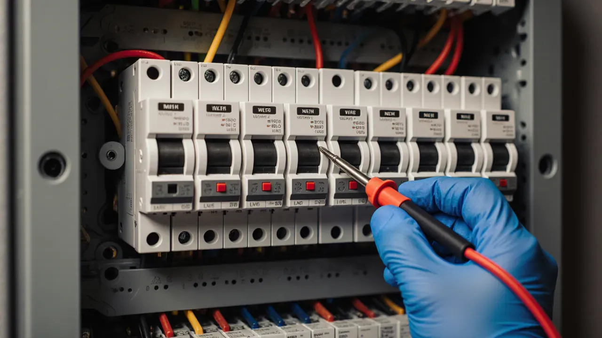

What a Certificate of Compliance is
A Certificate of Compliance (CoC) is required under the Electrical Installation Regulations, 2009, made under the Occupational Health and Safety Act. It confirms that an electrical installation was inspected and tested, and that it met the wiring standard SANS 10142-1 at the time.
Only a registered person may issue one. There are three categories, each allowed to certify different kinds of installation:
- Electrical tester for single phase: single-phase installations, such as most houses
- Installation electrician: single-phase and three-phase installations
- Master installation electrician: all of the above, plus specialised installations
When you need one
- For a new electrical installation, before it is used
- After additions or alterations to an existing installation
- When a property changes ownership. A new CoC is generally needed if the existing one is more than two years old, or if work has been done since it was issued.

What a CoC does not tell you
A CoC is a snapshot of whether a low-voltage installation complies with the wiring standard. It is valuable, but it does not answer questions like these:
- Is the supply big enough for what the building will need in five years?
- Will the protection trip in the right order, so one fault does not black out the whole site?
- Is the design efficient, or are cables and equipment oversized and overpriced?
- Does the medium-voltage side, such as a mini-substation or transformer, meet its own requirements?
- Will the municipality or Eskom approve a new or bigger connection?
When to bring in an engineer
A professional electrical engineer looks at the whole system, not only whether the wiring passes inspection. You will usually need one for:
- New or upgraded supplies: applications to the municipality or Eskom, especially bulk and medium-voltage supplies
- Medium-voltage work: substations, transformers and MV cabling
- Larger buildings: commercial, industrial and multi-tenant developments, estates and sectional title schemes
- Solar and embedded generation: where the municipality requires professional sign-off
- Studies: load, fault level and protection coordination studies
- Disputes and claims: independent condition assessments, failure investigations and insurance reports
- Public sector projects: where tenders require a registered professional
Side by side
| Certificate of Compliance | Engineer's involvement | |
|---|---|---|
| Who | Registered person (electrician category) | Professional engineer or technologist registered with ECSA |
| Question answered | Does this installation comply with SANS 10142-1 today? | Is this the right design, and will it work safely and efficiently? |
| Typical scope | Low-voltage installations in homes and buildings | Whole systems, including supply, MV, protection and future growth |
| When | New work, alterations and property transfers | Design stage, supply applications, larger projects and investigations |
How they work together
On a well-run project the roles complement each other. The engineer designs and specifies the installation. The contractor builds it. A registered person tests it and issues the CoC. The engineer then witnesses key tests, checks the CoC and test results, and signs off that the installation matches the design.
A simple rule of thumb: if the question is "is this house's wiring safe and compliant?", a registered electrician and a CoC is usually the answer. If the question involves a new or bigger supply, medium voltage, a large or complex building, or a decision worth real money, involve an engineer early. It is almost always cheaper than fixing a design after it is built.
Not sure which one your project needs?
Tell us what you are planning and we will point you in the right direction.
This article is general information about South African requirements, not legal advice or advice for a specific installation. Regulations and their interpretation can change, so confirm the requirements for your situation with a registered person or a professional engineer.